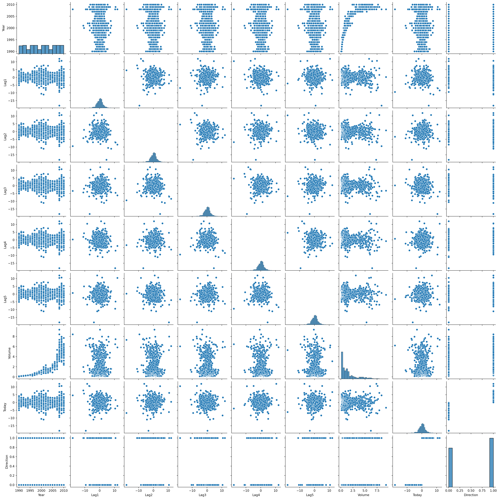

This question should be answered using the Weekly data set, which is part of the ISLP package. This data is similar in nature to the Smarket data from this chapter’s lab, except that it contains 1089 weekly returns for 21 years, from the beginning of 1990 to the end of 2010.
As always, we start by importing the data. We also import Numpy.
import numpy as npimport pandas as pdweekly = pd.read_csv("data/Weekly.csv")weekly.head()
The most important exploratory plotting device is the pairplot, so let’s start with that.
import seaborn as snsimport matplotlib.pylab as pltsns.pairplot(weekly)plt.show()

There are no clear trends except for volume vs year. There does appear to be a relationship between volume and most variables, but only for the variance, but it’s very hard to read the the plots involving the binary variable Direction.
Let’s take a look at the correlation matrix too.
weekly.corr()
Year
Lag1
Lag2
Lag3
Lag4
Lag5
Volume
Today
Direction
Year
1.000000
-0.032289
-0.033390
-0.030006
-0.031128
-0.030519
0.841942
-0.032460
-0.022200
Lag1
-0.032289
1.000000
-0.074853
0.058636
-0.071274
-0.008183
-0.064951
-0.075032
-0.050004
Lag2
-0.033390
-0.074853
1.000000
-0.075721
0.058382
-0.072499
-0.085513
0.059167
0.072696
Lag3
-0.030006
0.058636
-0.075721
1.000000
-0.075396
0.060657
-0.069288
-0.071244
-0.022913
Lag4
-0.031128
-0.071274
0.058382
-0.075396
1.000000
-0.075675
-0.061075
-0.007826
-0.020549
Lag5
-0.030519
-0.008183
-0.072499
0.060657
-0.075675
1.000000
-0.058517
0.011013
-0.018168
Volume
0.841942
-0.064951
-0.085513
-0.069288
-0.061075
-0.058517
1.000000
-0.033078
-0.017995
Today
-0.032460
-0.075032
0.059167
-0.071244
-0.007826
0.011013
-0.033078
1.000000
0.720025
Direction
-0.022200
-0.050004
0.072696
-0.022913
-0.020549
-0.018168
-0.017995
0.720025
1.000000
The correlation matrix supports the conclusion of no clear relationship between the continuous variables, with the exception of volume and year, with a correlation of approximately 0.84. The correlation between Today and Direction is high.
(b)
Use the full data set to perform a logistic regression with Direction as the response and the fve lag variables plus Volume as predictors. Use the summary function to print the results. Do any of the predictors appear to be statistically signifcant? If so, which ones?
We use statsmodels for this. Recall that the disp=0 argument prevents the fit method from displaying any information.
Compute the confusion matrix and overall fraction of correct predictions. Explain what the confusion matrix is telling you about the types of mistakes made by logistic regression.
The confusion matrix summarizes the performance of a classification model. It shows the relationship between predicted class labels and actual class labels, and is (for a binary classifier) defined as follows:
Predicted 1
Predicted 0
Actual 1
True positive
False negative
Actual 0
False positive
True negative
For example, the classifier that always predicts 1will potentially have a high false positive rate, but always \(0\) false negative and true negative rate. For probabilistic methods such a logistic regression, one has a certain degree of control over the confusing matrix by modifying the cutoff used for prediction. The cutoff defaults to a probability of \(0.5\), but can be modified to any number in \([0,1]\), with resulting changes to the confusion matrix.
Below we see the confusion matrix for the cutoff \(0.5\).
from sklearn.metrics import confusion_matrixconfusion_matrix(weekly["Direction"], fit.predict() >0.5) / weekly.shape[0]
The false positive rate is small, but the false negative rate is very high. To reduce the false negative rate we can make the cutoff higher, e.g., 0.55.
Now ft the logistic regression model using a training data period from 1990 to 2008, with Lag2 as the only predictor. Compute the confusion matrix and the overall fraction of correct predictions for the held out data (that is, the data from 2009 and 2010).
The fraction of correct predictions is the sum of the diagonal of this matrix (this is known as the trace), which equals
np.trace(mat)
0.625
(e)
Repeat (d) using LDA.
Now we’re asked to repeat something - the remainder of the exercises do the same. When we’re asked to repeat ourselves in programming we make functions, and that’s what we’re going to do now.
Which of these methods appears to provide the best results on this data?
That’s LDA and logistic regression.
(j)
Experiment with different combinations of predictors, including possible transformations and interactions, for each of the methods. Report the variables, method, and associated confusion matrix that appears to provide the best results on the held out data. Note that you should also experiment with values for K in the KNN classifer.
Note: Exercises like these are very common both in real life and on exams. You need to take them seriously and spend some time experimenting on them.
Logistic regression, naïve Bayes, LDA and QDA involve choices of covariates. There are five lags and one volume covariate, for a total of six of covariates to investigate; for each covariate combination (including transformations), it’s natural to compare all of these models against each other.
Before we begin, let’s make new test and training sets with all covariates included.
The confusion function can be modified to accept an indices argument which specifies which covariates to include in the fitter. This allows us to easily compare different choices of covariates without transformations.
If we are only interested in success probability, we only need to access success_prob. It’s OK to round the output here, as it’s not used as input to other algorithms.
from sklearn.linear_model import LogisticRegressionindices = [0,1,4]fitters = {LogisticRegression(),LDA(),QDA(),GaussianNB()}{fitter:round(confusion2(fitter, indices)["success_prob"],3) for fitter in fitters}
success =lambda indices: {fitter:round(confusion2(fitter, indices)["success_prob"],3) for fitter in fitters}
Now we can run couple of experiments:
frame = pd.DataFrame([success([0,1,2,3,4]), success([0,1,2,3]), success([1,2,3]), success([1,2]), success([1])], index = ["[0,1,2,3,4]","[0,1,2,3]","[1,2,3]","[1,2]","[1]"])frame
LinearDiscriminantAnalysis()
LogisticRegression()
GaussianNB()
QuadraticDiscriminantAnalysis()
[0,1,2,3,4]
0.548
0.548
0.481
0.462
[0,1,2,3]
0.577
0.587
0.510
0.519
[1,2,3]
0.615
0.615
0.558
0.548
[1,2]
0.625
0.625
0.587
0.606
[1]
0.625
0.625
0.587
0.587
Observe that logistic regression and LDA outperforms the other two methods, so we don’t need to care about them anymore. Moreover, it seems like adding more covariates to the methods do not increase their performance, but Lag3 (index 2) seems promising. In any case, it is unlikely that adding transformations or interactions would help our prediction efforts. But let’s try a couple with logistic regression. Since logistic regression is in statsmodels, it is easier to experiment with as well.
We try out interaction, a quadratic transform, and a combination between the two below. Sadly, we aren’t able to outperform the logistic model using Lag2 only.
fit = smf.logit("Direction ~ Lag2*Lag3", data = data_train).fit(disp=0)mat = confusion_matrix(data_test["Direction"], fit.predict(data_test) >0.50) / data_test.shape[0]print(f"Confusion matrix {mat}")print(f"Success probability: {np.trace(mat)}")